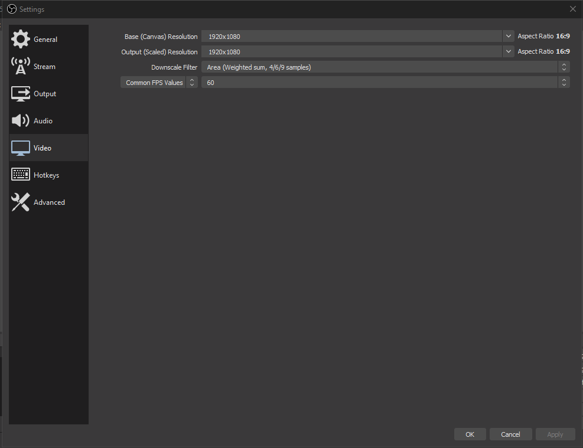
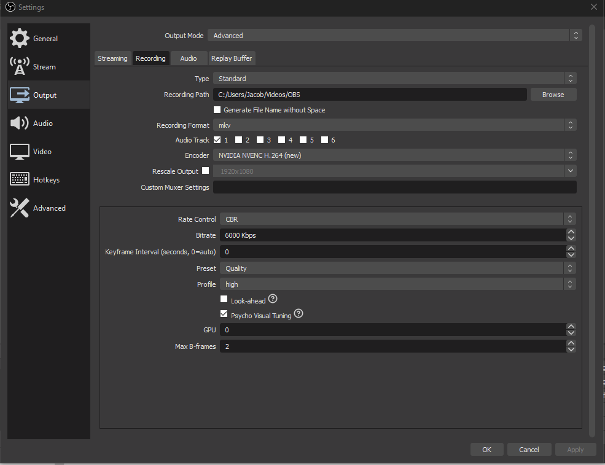
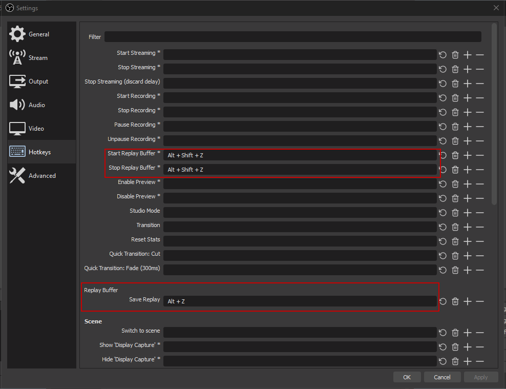

In video settings, set Base (Canvas) and Output (Scaled) resolutions to 1920x1080, FPS to 60
In output settings, make sure Advanced is checked. Confingure Encoder and settings as below. Set preferred save location and file format. Note: for 1080p 60fps video, 6000kbps bitrate is preferred.
Create a hotkey for Save Replay. Optionally, create a hotkey for Start/Stop Replay Capture.
You are now all set. Enjoy having better instant replays than shadowplay (don't forget that you can now disable shadowplay).